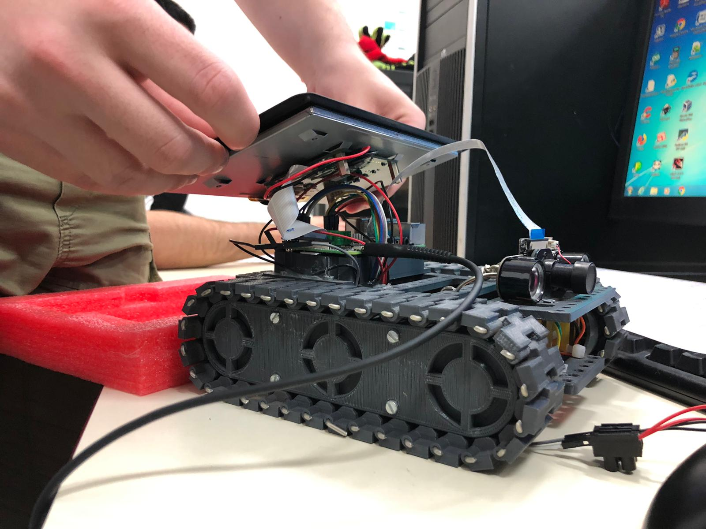
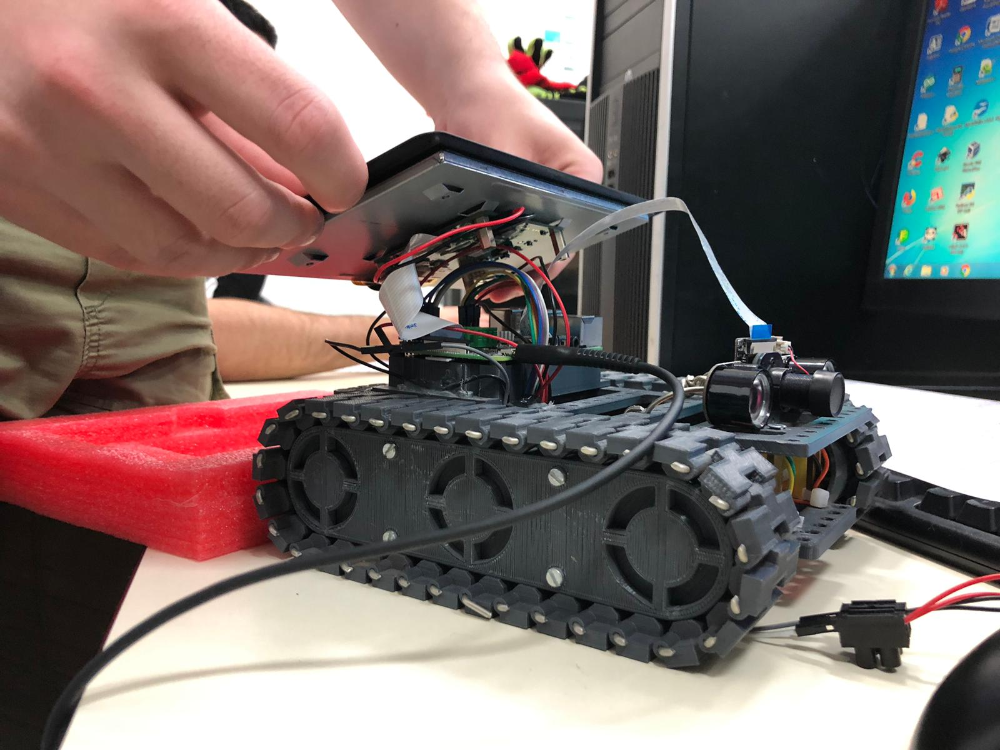

Comment fonctionne le robot ?
Introduction
Le fonctionnement du robot se fait en plusieurs parties, tout d'abord mécaniques, puis à l'aide de plusieurs classes codés en Python qui permettront d'intéragir avec le serveur (et par extensions les clients).
 

Photographies montrant le robot.
Le côté mécanique du robot
Le robot a été créé à l’aide d’une petite carte mère, appelé Raspberry Pi, il comporte 4 moteurs contrôlés indépendamment, deux sur chacune des chenilles. Ces moteurs sont reliés à des L298N qui permettent de les contrôler en les branchant aux pins GPIO (ports généraux) du Raspberry Pi. Le Raspberry Picomporte en effet des 40 pins permettant différentes interactions électroniques, certains d'entre eux sont des pins GPIO, cela signifie qu’ils peuvent être définis en tant qu’entrée ou sortie et peuvent être activé ou désactivés lorsque ce sont des sorties. Ainsi, chacun des L298N est relié à deux moteurs et 4 pins GPIO, chaque moteur étant contrôlé par deux pins GPIO.

Image montrant les différents ports GPIO d'un Raspberry Pi 3 B+.
Ainsi, il faut dans un premier temps définir quels pins correspondent à quel moteur (2 par moteur). Lorsque les deux pins GPIO contrôlant le moteur sont dans le même état (HIGH ou LOW), le moteur n'est pas activé. C'est lorsqu'un seul de ses inputs est activé (HIGH) que ce dernier tournera dans un certain sens, et quand l'autre input est le seul activé, le moteur tourne dans l'autre sens.
Ensuite, il y aussi une caméra connectée au Raspberry Pi, qui elle a un fonctionnement beaucoup plus simple, elle est connectée par un seul élément et n’a pas besoin d’alimentation propre à elle-même, même s’il a ensuite fallu la configurer sur le système du Raspberry Pi.
Finalement, un écran tactile est aussi connecté au Raspberry Pi de manière à pouvoir le contrôler sans avoir à le connecter à un écran, un clavier et une souris. L’écran nécessite lui d’être connecté à l’alimentation du Raspberry Pi.
Le code du robot
Pour pouvoir contrôler ces différents éléments, nous avons donc créé deux classes en Python, robotEngine et robotCamera.
La classe robotEngine va permettre de contrôler la vitesse des moteurs du Raspberry Pi, à son démarrage il va s’occuper de désactiver tous les pins (LOW) puisque ces derniers restent activés même après un redémarrage du Raspberry Pi.A son extinctionil va permettre d'éteindre les ports du robot, etremettre à zéro tous les ports GPIO.Durant l’exécution du programme il va ensuite tourner en boucle et rafraîchir la vitesse des moteurs à intervalle donné tant qu’il est en fonctionnement.Le déplacement du robot est contrôlé en faisant varier la vitesse de chaque chenille. Chaque chenille peut avoir une vitesse allant de -16 à 16 (-16 étant la vitesse maximale de marche arrière, 0 signifiant qu'elle ne bouge pas et 16 étant la vitesse maximale). Cette vitesse est établie à l'aide d’une fonction qui demande deux entiers allant de -16 à 16, le premier étant la vitesse de la chenille droite et le second de la gauche. Si l'on ne souhaite changer la vitesse que d'une chenille on peut utiliser d’autres fonctions spécifiques aux deux côtésqui ne demandent qu'un seul entier.
Ensuite, robotCamera est une classe qui va permettre de gérer la caméra en envoyant un flux vidéo en créant un simple serveur HTTP qui va intercepter chaque requête GET (qui seront envoyés régulièrement en temps réels) pour pouvoir ensuite transmettre à chaque client envoyant cette requête le flux vidéo qu’il va obtenir grâce à la caméra (ayant une qualité actuellement fixé à 24 images par secondes à une résolution haute définition).